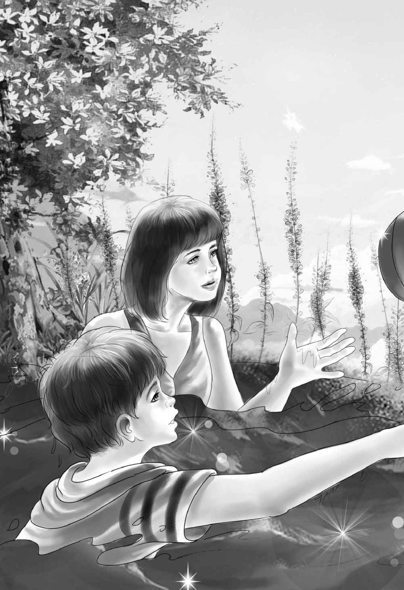
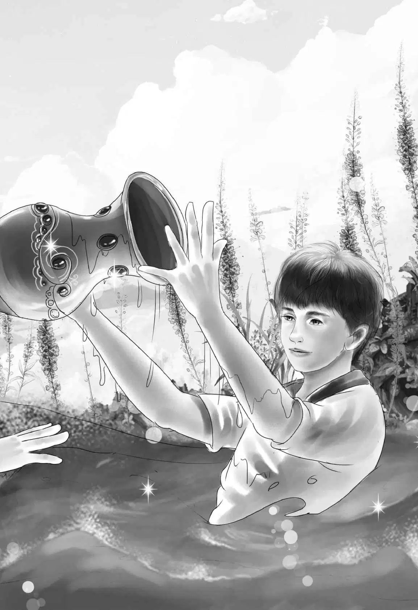

Jessie called， “Lunch！We have a surprise for you， Benny.”
Benny took one look at his plate. On it was a piece of Commander Williams’ fish and a pile of fluffy mashed potatoes.
“Oh， mashed potatoes！” shouted Benny. “You’re a nice sister， Jessie！But where did you get them？”
“Out of a box，” said Jessie. “It’s instant potato.”
Halfway through lunch Henry looked out over the river and began to laugh. “We’re still at anchor，” he said. “I forgot to pull up the anchor after Commander Williams left.”
“I guess we’re going nowhere in a hurry，” said Benny.
When everything was eaten， Jessie said， “If you all help， we’ll be through our work in a hurry. Henry， will you take these fish heads and tails and throw them to the gulls？They must have known we had fish.”
It happened that Henry had the houseboat key in his hand when Jessie called him. He picked up the scraps and went to the back deck. He raised his arm as high as he could and threw—not the fish heads—but the door key！
“Jessie！” Henry yelled. “Dive with me！Swim right where I swim！”
Jessie did not know what it was all about， but she did exactly what Henry told her. She dived in and followed him.
Henry gasped， “I threw the door key！I haven’t taken my eyes off the spot. I know just where it went.”
“We’ll dive for it，” said Jessie， swimming faster.
“Here！” said Henry. He put his head down and disappeared. Jessie followed.
In a minute they both came up. “I saw it！” gasped Jessie， “but I couldn’t stay down.”
“Same here，” sputtered Henry. They both went down again. By this time the family was watching from the rear deck.
“Stay here， Benny，” Grandfather said. “You’ll just stir up the water so they can’t see. Two is enough. Ha！Good for you， Henry！”
Henry came up， holding the key. Jessie came up. They swam quickly to the boat and climbed aboard.
Henry made a bow to Jessie and gave her the key. “Put it around your neck on a chain，” he said. “I’m not fit to carry a key！”
“Oh， yes， you are，” said Grandfather. “You did very well to see exactly where the key went.”
Then Benny said， “But look where all the fish heads and scraps went—all over the sandbox！”
Benny held up a fish tail and called. The air was full of gulls in an instant. They caught all the scraps before they landed in the water.
Jessie sniffed. “That sand will always smell fishy. We can’t have that on a boat. We’ll have to get some new sand.”
Benny began to laugh. He said， “Henry， you ought to have seen yourself！Throwing that key as far as you could and dropping the fish bones. That was pretty neat！”
Violet pointed toward the shore. “Isn’t that a nice white beach？” she asked. “We can empty the box and fill it up with clean sand.”
“It looks fine，” said Mr. Alden. “Let’s pole the boat in， Henry.”
“I’ll go and empty the sandbox，” said Benny. “We can just dump the sand in the water.”
“I’ll help you，” said Jessie. “Sand is heavy.”
The two dragged the sandbox to the rear deck and tipped it over. The sand poured smoothly into the river.
“The sand looks like water，” said Benny. “It’s like a waterfall.”
But suddenly， what was this flashing thing in the bottom of the box， under the sand？Before Jessie or Benny could do anything it went into the river， with a flash of red and green and gold.
“The vase—the vase from the auction！” Benny shouted. In an instant he dived into the water. Jessie followed him， shouting “Henry！”
Henry heard his name and came running. Mr. Alden and Violet came， too. Just then Benny came up gasping. “It’s the vase on the desk！” he said.
Jessie came up， gasping. “I see it！It is that vase. You try， Henry.”
Down went Henry. In no time he was up again with the vase in his hand.
“Terrific！” yelled Benny.
“Good thing，” said Henry as he tried to get his breath， “the boat is hardly moving. The vase was right there on top of the white sand.”
Jessie， Benny， and Henry climbed on board， breathing hard. They looked at the vase.
Violet said， “It is just what the auctioneer said， gold with rubies and emeralds.”
“But how did it get in our sandbox？” asked Jessie.
“I know！” said Benny. “The one who came aboard our houseboat thought it was a safe hiding place. I’m sure！”
Mr. Alden said， “I’m sure， too.”
Benny said， “I’ll tell you what. Let’s go and get that clean sand. We might still have a fire on board and need sand to put it out. When the sandbox is filled， Henry can start the motor and we’ll go back to the auction place.”


Henry nodded. “That’s good， Ben. I certainly want to put this vase in a safe place. And we know there is a policeman at that landing.”
Henry and Benny poled the boat to the sandy beach. Henry jumped out with the empty box and waded ashore. He filled the box up to the line and came back with it on his shoulder.
Mr. Alden reached down and took the box. Henry climbed back on the boat. “This is the day when we are in and out of the water，” he said.
Henry and Mr. Alden turned the houseboat around to head up the river. Henry started the motor in the rear. Off they went！How strange it seemed to be going so fast.
Past Gull Island， past their old landings， past the red-winged blackbirds， past April Center. At last Violet said， “I see the auction sign ahead.”
Henry turned off the motor and poled the boat up to the landing. The Aldens walked up the path， Benny carrying the vase in the empty mashed-potato box.
“Who’d ever guess what we have？” Benny asked， “A potato box is just the thing for a treasure.”